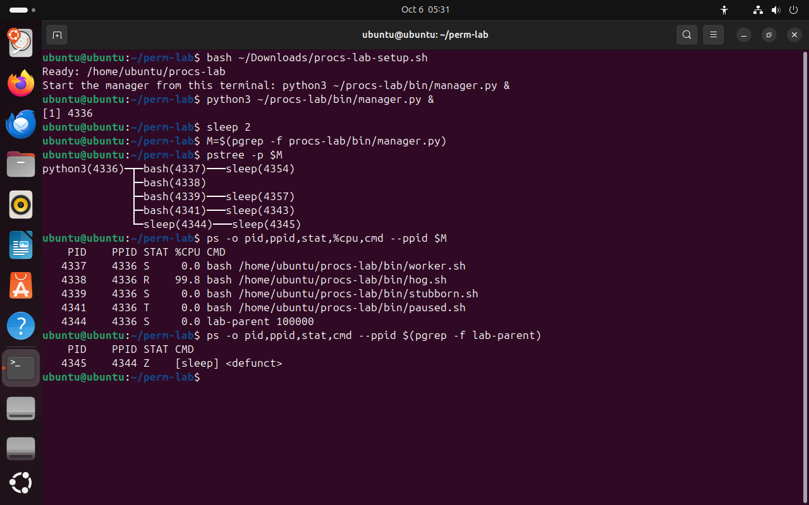
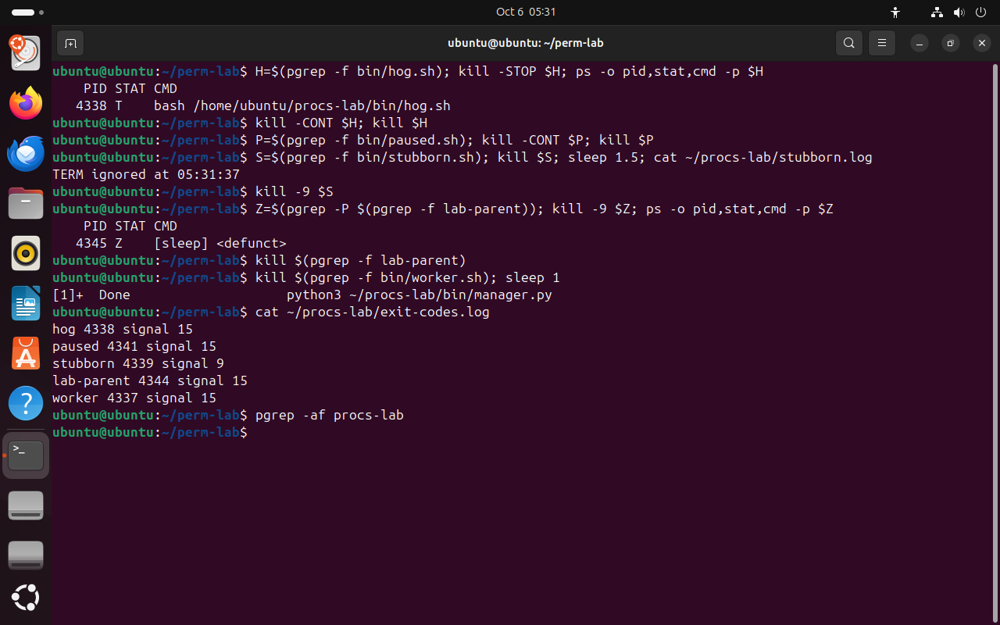
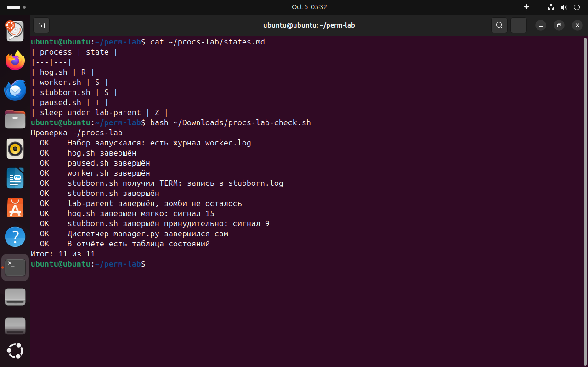

Часть 7 из 7
Практическая работа · Диспетчер процессов
В этой части запустим набор процессов в разных состояниях, построим их дерево, определим состояния и завершим каждый процесс подходящим сигналом. Порядок действий проверит журнал диспетчера и скрипт.
7.1 Набор процессов
Скрипт procs-lab-setup.sh создаёт каталог ~/procs-lab с пятью программами и диспетчером manager.py. Диспетчер вы запускаете сами, в фоне из своего терминала. Он порождает пять процессов, у каждого своё поведение, и записывает в exit-codes.log, каким сигналом завершился каждый. Когда потомков не остаётся, диспетчер выходит сам.
- worker.sh
раз в 5 секунд пишет время в журнал и спит
спит - hog.sh
бесконечный пустой цикл, занимает процессор целиком
занят - stubborn.sh
перехватывает TERM, записывает это в журнал и работает дальше
упрямый - paused.sh
диспетчер останавливает его сразу после запуска
на паузе - lab-parent
запускает потомка и не ждёт его — потомок становится зомби
родитель зомби - manager.py
диспетчер: запускает всех, записывает, как завершился каждый, и выходит, когда потомков не осталось
родитель набора
Диспетчер запускают из терминала из-за правила ядра для групп процессов. Если запустить его из скрипта, после выхода скрипта ядро считает группу процессов «осиротевшей» и посылает остановленным процессам в ней сигналы HUP и CONT — остановленный paused.sh сам продолжил бы работу. Процесс, запущенный из интерактивной оболочки, такой рассылки не получает.
7.2 Задания
Задания выполняются по порядку в одном окне терминала. Завершайте процессы так, как сказано в задании: проверка смотрит, что процессов не осталось и каким сигналом завершён каждый.
| № | Задание | Подсказка |
|---|---|---|
| 1 | Создайте набор командой bash ~/Downloads/procs-lab-setup.sh и запустите диспетчер в фоне из того же терминала: python3 ~/procs-lab/bin/manager.py &. | знак & в конце |
| 2 | Найдите PID диспетчера и нарисуйте дерево его потомков с номерами. | pgrep -f, pstree -p |
| 3 | Определите состояние каждого потомка и потомка процесса lab-parent. Запишите таблицу «процесс — состояние» в ~/procs-lab/states.md. | ps -o pid,ppid,stat,%cpu,cmd --ppid PID |
| 4 | hog.sh занимает процессор. Остановите его, убедитесь, что состояние T, затем продолжите и завершите сигналом TERM. | kill -STOP, kill -CONT, kill |
| 5 | paused.sh остановлен. Продолжите его и завершите сигналом TERM. | kill -CONT, затем kill |
| 6 | Пошлите stubborn.sh сигнал TERM и проверьте его журнал ~/procs-lab/stubborn.log. Затем завершите процесс так, чтобы он не мог отказаться. | kill, cat, kill -9 |
| 7 | Попробуйте снять зомби сигналом KILL и убедитесь, что он остался. Уберите зомби, завершив его родителя lab-parent. | pgrep -P, kill |
| 8 | Завершите worker.sh. Убедитесь, что диспетчер завершился сам, и прочитайте ~/procs-lab/exit-codes.log. | kill, pgrep -af procs-lab |
| 9 | Запустите проверку bash ~/Downloads/procs-lab-check.sh и добейтесь результата 11 из 11. | скрипт в материалах занятия |
bash ~/Downloads/procs-lab-setup.sh# создать наборчто делает
Что делает команда. Создаёт каталог ~/procs-lab с программами набора и диспетчером.
По частям:
bash- запустить оболочку bash
~/Downloads/procs-lab-setup.sh- файл скрипта (путь от домашнего каталога)
python3 ~/procs-lab/bin/manager.py &# запустить диспетчерчто делает
Что делает команда. Запускает диспетчер набора в фоне из текущего терминала.
По частям:
python3- запустить интерпретатор Python и выполнить программу из файла
~/procs-lab/bin/manager.py- файл программы (путь от домашнего каталога)
&- запустить команду слева в фоне и сразу продолжить
sleep 2что делает
Что делает команда. Ждёт две секунды, чтобы потомок успел завершиться.
По частям:
sleep- ничего не делать указанное число секунд
2- сколько секунд
M=$(pgrep -f procs-lab/bin/manager.py)# PID диспетчера в переменную Mчто делает
Что делает команда. Находит PID диспетчера и сохраняет его в переменную M.
По частям:
M=$( … )- сохранить в переменную M вывод команды в скобках
pgrep- найти процессы и вывести их PID
-f- искать образец во всей командной строке, а не только в имени
procs-lab/bin/manager.py- образец имени
pstree -p $M# деревочто делает
Что делает команда. Рисует дерево потомков диспетчера с номерами.
По частям:
pstree- нарисовать дерево процессов
-p- показывать PID рядом с именем
$M- с какого процесса начинать, значение переменной M: сохранённый PID
ps -o pid,ppid,stat,%cpu,cmd --ppid $M# потомки и состояниячто делает
Что делает команда. Выводит потомков диспетчера с состоянием и загрузкой процессора.
По частям:
ps- вывести сведения о процессах
-o pid,ppid,stat,%cpu,cmd- выводить столбцы pid,ppid,stat,%cpu,cmd
--ppid $M- выбрать потомков процесса $M
ps -o pid,ppid,stat,cmd --ppid $(pgrep -f lab-parent)# потомок lab-parentчто делает
Что делает команда. Выводит потомка процесса lab-parent.
По частям:
ps- вывести сведения о процессах
-o pid,ppid,stat,cmd- выводить столбцы pid,ppid,stat,cmd
--ppid $(pgrep -f lab-parent)- выбрать потомков процесса из вывода «pgrep -f lab-parent»
- 1диспетчер — python3, родитель всех процессов набора
- 2S: worker и stubborn спят
- 3R: hog занимает процессор
- 4T: paused остановлен диспетчером
- 5lab-parent — exec заменил bash на sleep
- 6Z: потомок lab-parent


Весь снимок ↗Дерево диспетчера и состояния процессов набора.
Что показывает снимок. У диспетчера python3 пять потомков: worker и stubborn спят, hog занимает процессор, paused остановлен, lab-parent спит, а его потомок — зомби.
Где это пригодится. Сравните своё дерево и состояния с эталоном: номера будут другими, буквы в столбце STAT должны совпасть.
H=$(pgrep -f bin/hog.sh); kill -STOP $H; ps -o pid,stat,cmd -p $H# hog: остановить и проверитьчто делает
Что делает команда. Находит hog.sh, останавливает его и показывает состояние.
По частям:
H=$( … )- сохранить в переменную H вывод команды в скобках
pgrep- найти процессы и вывести их PID
-f- искать образец во всей командной строке, а не только в имени
bin/hog.sh- образец имени
;- разделитель: выполнить следующую команду после этой
kill- послать процессу сигнал
-STOP- послать сигнал STOP: остановить процесс
$H- какому процессу, значение переменной H: сохранённый PID
;- разделитель: выполнить следующую команду после этой
ps- вывести сведения о процессах
-o pid,stat,cmd- выводить столбцы pid,stat,cmd
-p $H- выбрать процесс с PID $H
kill -CONT $H; kill $H# продолжить и завершитьчто делает
Что делает команда. Продолжает hog.sh и сразу посылает ему TERM.
По частям:
kill- послать процессу сигнал
-CONT- послать сигнал CONT: продолжить остановленный процесс
$H- какому процессу, значение переменной H: сохранённый PID
;- разделитель: выполнить следующую команду после этой
kill- послать процессу сигнал
$H- какому процессу, значение переменной H: сохранённый PID
P=$(pgrep -f bin/paused.sh); kill -CONT $P; kill $P# paused: продолжить и завершитьчто делает
Что делает команда. Находит paused.sh, продолжает его и посылает TERM.
По частям:
P=$( … )- сохранить в переменную P вывод команды в скобках
pgrep- найти процессы и вывести их PID
-f- искать образец во всей командной строке, а не только в имени
bin/paused.sh- образец имени
;- разделитель: выполнить следующую команду после этой
kill- послать процессу сигнал
-CONT- послать сигнал CONT: продолжить остановленный процесс
$P- какому процессу, значение переменной P: сохранённый PID
;- разделитель: выполнить следующую команду после этой
kill- послать процессу сигнал
$P- какому процессу, значение переменной P: сохранённый PID
S=$(pgrep -f bin/stubborn.sh); kill $S; sleep 1.5; cat ~/procs-lab/stubborn.log# stubborn: TERM и журналчто делает
Что делает команда. Посылает stubborn.sh сигнал TERM и показывает его журнал: процесс записал, что получил TERM.
По частям:
S=$( … )- сохранить в переменную S вывод команды в скобках
pgrep- найти процессы и вывести их PID
-f- искать образец во всей командной строке, а не только в имени
bin/stubborn.sh- образец имени
;- разделитель: выполнить следующую команду после этой
kill- послать процессу сигнал
$S- какому процессу, значение переменной S: сохранённый PID
;- разделитель: выполнить следующую команду после этой
sleep- ничего не делать указанное число секунд
1.5- сколько секунд
;- разделитель: выполнить следующую команду после этой
cat- вывести содержимое файла
~/procs-lab/stubborn.log- какой файл (путь от домашнего каталога)
kill -9 $S# принудительночто делает
Что делает команда. Посылает stubborn.sh сигнал KILL, который перехватить нельзя.
По частям:
kill- послать процессу сигнал
-9- послать сигнал 9 — KILL: завершить немедленно
$S- какому процессу, значение переменной S: сохранённый PID
Z=$(pgrep -P $(pgrep -f lab-parent)); kill -9 $Z; ps -o pid,stat,cmd -p $Z# зомби не снимаетсячто делает
Что делает команда. Находит зомби — потомка lab-parent, посылает ему KILL и показывает, что он остался.
По частям:
Z=$( … )- сохранить в переменную Z вывод команды в скобках
pgrep- найти процессы и вывести их PID
-P $(pgrep -f lab-parent)- искать потомков процесса из вывода «pgrep -f lab-parent»
;- разделитель: выполнить следующую команду после этой
kill- послать процессу сигнал
-9- послать сигнал 9 — KILL: завершить немедленно
$Z- какому процессу, значение переменной Z: сохранённый PID
;- разделитель: выполнить следующую команду после этой
ps- вывести сведения о процессах
-o pid,stat,cmd- выводить столбцы pid,stat,cmd
-p $Z- выбрать процесс с PID $Z
kill $(pgrep -f lab-parent)# завершить родителя зомбичто делает
Что делает команда. Посылает TERM родителю зомби lab-parent.
По частям:
kill- послать процессу сигнал
$(pgrep -f lab-parent)- подставить вывод команды pgrep -f lab-parent
kill $(pgrep -f bin/worker.sh); sleep 1# workerчто делает
Что делает команда. Посылает TERM процессу worker.sh и секунду ждёт.
По частям:
kill- послать процессу сигнал
$(pgrep -f bin/worker.sh)- подставить вывод команды pgrep -f bin/worker.sh
;- разделитель: выполнить следующую команду после этой
sleep- ничего не делать указанное число секунд
1- сколько секунд
cat ~/procs-lab/exit-codes.log# как завершился каждыйчто делает
Что делает команда. Выводит журнал диспетчера: каким сигналом завершён каждый процесс.
По частям:
cat- вывести содержимое файла
~/procs-lab/exit-codes.log- какой файл (путь от домашнего каталога)
pgrep -af procs-lab# процессов набора нетчто делает
Что делает команда. Ищет процессы набора; пустой вывод — не осталось ни одного.
По частям:
pgrep- найти процессы и вывести их PID
-af- -a — вывести командную строку, -f — искать по всей командной строке
procs-lab- образец имени
- 1T: hog остановлен
- 2stubborn перехватил TERM и записал это
- 3KILL зомби не убирает: он на месте
- 4журнал: hog завершён TERM (15)
- 5stubborn завершён KILL (9)
- 6диспетчер завершился сам: потомков не осталось


Весь снимок ↗Сигналы процессам набора и журнал диспетчера.
Что показывает снимок. hog остановлен и завершён TERM, paused продолжен и завершён, stubborn отказался от TERM и снят KILL, зомби исчез вместе с родителем; журнал диспетчера записал сигнал для каждого процесса.
Где это пригодится. Журнал показывает, каким сигналом завершён каждый процесс: 15 — штатная остановка сигналом TERM, 9 — принудительное снятие KILL.
7.3 Проверка результата
Скрипт procs-lab-check.sh ничего не меняет: он проверяет, что процессов набора не осталось, что stubborn.sh сначала получил TERM, что hog завершён мягко, а stubborn — принудительно, что диспетчер вышел сам и что таблица состояний записана.
cat ~/procs-lab/states.md# таблица из задания 3что делает
Что делает команда. Выводит таблицу состояний, заполненную в задании 3.
По частям:
cat- вывести содержимое файла
~/procs-lab/states.md- какой файл (путь от домашнего каталога)
bash ~/Downloads/procs-lab-check.sh# проверка по 11 пунктамчто делает
Что делает команда. Запускает проверку: скрипт смотрит процессы и журналы набора и выводит OK или НЕТ по каждому пункту.
По частям:
bash- запустить оболочку bash
~/Downloads/procs-lab-check.sh- файл скрипта (путь от домашнего каталога)


Весь снимок ↗Таблица состояний и результат проверки эталонного решения.
Что показывает снимок. Таблица состояний записана; скрипт проверил, что процессов набора нет, сигналы выбраны верно и диспетчер вышел сам, и вывел «Итог: 11 из 11».
Где это пригодится. Если какой-то пункт выводит НЕТ, запустите набор заново и повторите задания: setup создаёт каталог с нуля, и журнал диспетчера начинается с пустого.
Итоги части 7
- Дерево и состояния набора:
pstree -p,ps -o pid,ppid,stat,%cpu,cmd --ppid PID. - Порядок для зависшей программы: STOP — разобраться, CONT или TERM — завершить, KILL — только если TERM не помог.
- Зомби убирают, завершая его родителя; сигнал зомби ничего не меняет.
- Сигнал, которым завершён процесс, виден по коду 128 + номер или в журнале родителя.
В отчётСнимки дерева, сигналов и проверки 11 из 11, таблица состояний states.md.
Что сдать
Отчёт report.md с девятью снимками экрана по шаблону из материалов и таблица состояний states.md. Номера PID в вашей системе будут отличаться от снимков урока.
| Снимок | Тема | Что написать под снимком |
|---|---|---|
01-process.png | Программа и процесс | Подпишите PID, PPID и состояние; чем процесс отличается от файла программы. |
02-tree.png | Дерево процессов | Подпишите цепочку от оболочки до sleep: кто чей родитель. |
03-states.png | Состояния | Объясните каждое из четырёх состояний и почему появился зомби. |
04-jobs.png | Фон и передний план | Что делает с заданием каждое действие. |
05-signals.png | STOP, CONT и trap | Почему процесс пережил TERM и не пережил KILL. |
06-exit.png | Коды завершения | Объясните коды 130, 143 и 137. |
07-lab-tree.png | Набор процессов | Таблица «процесс — состояние» для набора. |
08-lab-signals.png | Сигналы по заданиям | Какой сигнал выбран для каждого процесса и почему. |
09-lab-check.png | Проверка | Итог проверки; какие пункты потребовали исправления. |
Критерии оценки · 10 баллов
- 2процесс, PID, PPID и дерево — части 1–2
- 2состояния R, S, T, Z на опыте и их объяснение — часть 3
- 2фон и передний план, сигналы STOP, CONT, TERM, KILL — части 4–5
- 2коды завершения и зомби — часть 6
- 2практическая работа: таблица состояний, сигналы по заданиям, проверка 11 из 11
По каждому пункту: 2 балла — результат получен и объяснён, 1 — результат без объяснения, 0 — результата нет или объяснение неверное.
Перед сдачей
Отмечено 0 из 5
Домашнее задание · занятие 7
Максим Николаевич не хочет задавать домашнее задание. Но очень хочет
Аккуратное завершение
Напишите скрипт graceful.sh, который при запуске создаёт временный файл /tmp/graceful-$$.tmp, затем работает в бесконечном цикле со sleep 1. На сигнал TERM скрипт должен удалить свой временный файл и выйти с кодом 0 — команда trap из части 5.
- Запустите скрипт в фоне, пошлите TERM, получите код через
wait $!и покажите, что временного файла нет. - Запустите ещё раз и пошлите KILL: покажите код 137 и оставшийся временный файл. Объясните разницу двумя-тремя предложениями.
- Выведите цепочку процессов от PID 1 до своей оболочки командой
pstree -s -p $$и подпишите каждое звено: что это за программа.
Порядок сдачи
- Файлыпапка
lesson_05в своём репозитории по шаблону os-environments-template:report.md, снимки вscreenshots/,states.md,graceful.sh,processes.md. - Ветка и PRветка
hw-05, Pull Request в своюmain. - Срокдо начала следующего занятия.
- Критериипрактическая работа — 10 баллов по критериям выше; домашнее задание принимается, если скрипт удаляет файл на TERM и оба запуска показаны снимками с кодами завершения.
- ИИнейросеть можно попросить причесать формулировки и оформить таблицы в
.md— я сам так делаю всегда, поэтому и вам запрещать не буду. Команды и вывод — только из вашей виртуальной машины.